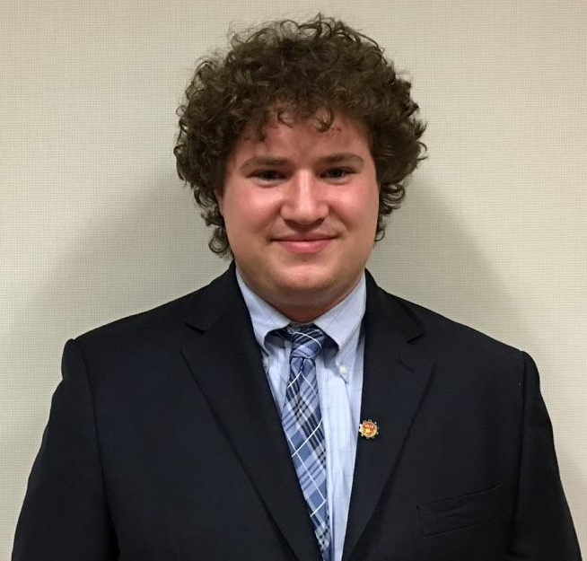

Team Members
|
Joshua Friscia
jcfriscia@wpi.edu jcfriscia@gmail.com Joshua Friscia is a senior double majoring in both Mechanical Engineering and Robotics Engineering. Josh is working on the mechanical design of the DAPS project, specifically the hydraulic actuation system. His interests lie in aviation, additive manufacturing, and medical robotic. |
images |
|
Meagan Hiatt
mehiatt@wpi.edu Meagan Hiatt is a senior majoring in Robotic Engineering and Electrical & Computer Engineering, minoring in Chinese Studies. Meagan is focusing on designing and building the electrical system of the DAPS project. She will be completing her MS in Robotics next year and hopes to work in the medical robotics field, particularly 3D printing and nanorobotics. |
|
|
Morgan Hopeman
mwhopeman@wpi.edu morgan.hopeman@gmail.com Morgan Hopeman is a senior Management Engineering Major finishing in May 2016. Morgan is completing her senior project in management through the management of the Dynamic Adjusting Prosthesis. In her free time you can usually find Morgan in the theatre working on tech. |
 |
|
Jacob Zizmor
jlzizmor@wpi.edu jlzizmor@gmail.com Jacob Zizmor is a senior majoring in Robotics Engineering and minoring in Computer Science. Jacob is focusing on the bladder design, software design, and control of the DAPS project. He is interested in medical robotics and prostheses. |
 |
Advisors
| Professor Gregory Scott Fischer, Ph.D. |
| Professor Cagdas Onal, Ph.D. |
Co-Advisors
| Michael Delph |
| Christopher Nycz |